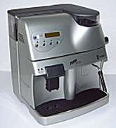

| system |
| home page |
| I've heard many digital audio workstations and was never convinced they could reach their potential, but with the GENx6 I think we're reaching that plateau. . Lucid Audio - Digital Recording Studio Equipment and Digital Audio Mastering - Home Page Welcome to LucidAudio. Lucid delivers the digital audio management tools you need. Behind every Lucid product is the kind of extreme thinking most often applied only to the most expensive digital studio toys. |
|  |
| . I am an amateur photographer with several years experience of analogue video. About three years ago I began to find out how to create digital video movies and still pictures. I wanted to be able to edit digital video on a personal computer, then store and output digital video film to either television, printed medium, CD-ROM or web servers. If you have similar interests, you may find some of the information and links useful. |